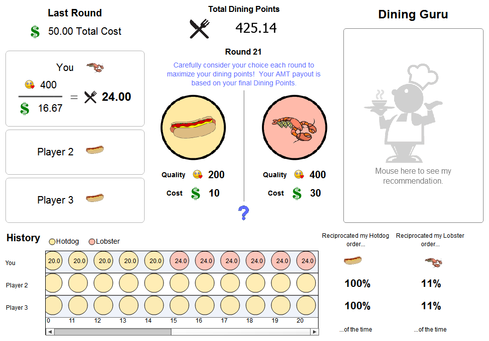
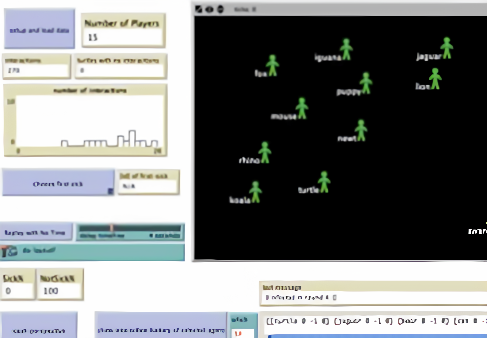

About Me
I'm a senior Ph.D. student at University of Illinois at Urbana-Champaign under the guidance of Professor Alex Kirlik. I'm a member of the Human-Computer Interaction research group.
My doctoral research focuses on studying the effects of over-trust and complacency in non-expert domains (e.g., recommender systems) through non-contextualized tasks, and over-trust can affect everyday interactions between users and AI. My research draws from human-computer interaction, human-automation interaction, human factors, AI and ML, and game theory and design. My work is supported by the U.S. Army Combat Capabilities Development Command Army Research Laboratory (ARL) through a Journeyman Fellowship.
Before UIUC, I completed by B.S. in Computer Engineering at Northwestern University. I grasped the ropes of HCI under the tutelage of Professor Michael Horn and Professor Corey Brady, working on participatory simulations with hackable hardware in high-school classrooms.
Education
Ph.D. Student, Computer Science
Department of Computer Science
University of Illinois at Urbana-Champaign expected 2022
B.S., Computer Engineering
Department of Electrical and Computer Engineering (formerly Electrical Engineering and Computer Science)
Northwestern University 2016
Research
-

Complacency and Strategy Formation in Human-Agent Teams in a Multi-Agent Simulation
With advancing and complex machine learning, autonomous agents are now a step closer in navigating uncertain operational environments. In order to integrate computational agents in team-based operations, where their roles have as much impact as a human's, we must account for automation complacency - a state defined by over-trusting intelligent systems, allowing detriment in human performance - due to the agent's potentially exceeding performance. This work explores the presence and effect of complacency in human-agent teams, where agents are trained to deliver either high or sub-par performance. We compare qualitative measures of the human's predisposition to complacency and trust using the Automation-induced Complacency Potential scale, and validate their beliefs by quantifying complacency through various metrics associated with the actions taken during the task with crafted agents. This work contributes to the validation of automation complacency paradigms, allowing the careful design of agent performance in heterogeneous teams.
Complacency: SPIE 2020 Paper
Strategy Formation: SPIE 2019 Paper, CSCI 2019 Short Paper, SPIE 2020 Paper, CSCE 2020 Paper -

Knowledge Complacency in Decision Support Systems
Decision support systems (DSS), which are often based on complex statistical, machine learning, and AI models, have increasingly become a core part of data analytics and sensemaking processes. Automation complacency - a state characterized by over-trust in intelligent systems - has the potential to result in catastrophic performance failure. An under-investigated factor in automation complacency research is the effect that DSS might have on human learning of domain concepts. In this paper, we perform a comparative analysis of two studies of users interacting with decision aids to understand how knowledge retention is affected by the competence and presentation of a DSS. Our results indicate that while humans have the opportunity to learn and internalize domain concepts while being supported by a DSS, features that make the DSS appear more competent, persuasive, or customizable may lead a user to form incorrect beliefs about a domain.
-

Participatory Simulations for CS Education with a Hackable Electronic Conference Badge
Computer science (CS) is becoming an increasingly diverse domain. This work reports on an initiative designed to introduce underrepresented populations to computing using an eclectic, multifaceted approach. As part of a yearlong computing course, students engage in various activities, including participatory simulations, that foreground the social and collaborative aspects of CS. Collectively, these activities are designed to introduce learners to the growing diversity of what CS looks like in the 21st century. This paper lays out the practical and theoretical motivations for the Computational Thinking for Girls (CT4G) project, specifically highlighting the use of Making through physical and social computing as ways to engage students in CS. A snapshot of one activity from the program is provided - Wearing the Web - in which students use open-hardware programmable badges to explore the underlying structure and technology that enables the Internet. Data from the first year of the CT4G program are presented to show the positive effects that this diverse introduction to CS is having on the students with respect to their attitudes toward CS.
Cool Facts
- I'm Peruvian-Colombian, and I spent most of my childhood (and some adolescence) in Perú.
- "Sebas" (SEH-bahs) is a nickname my family and friends gave me in Perú.
- I enjoy social dancing very often, almost exclusively Latin dancing!
- I've been playing percussion for 11 years.
- Both my Spanish and English-speaking friends say I have an accent on each respectively. :v
© Sebastian S. Rodriguez. Last Updated: September 2020